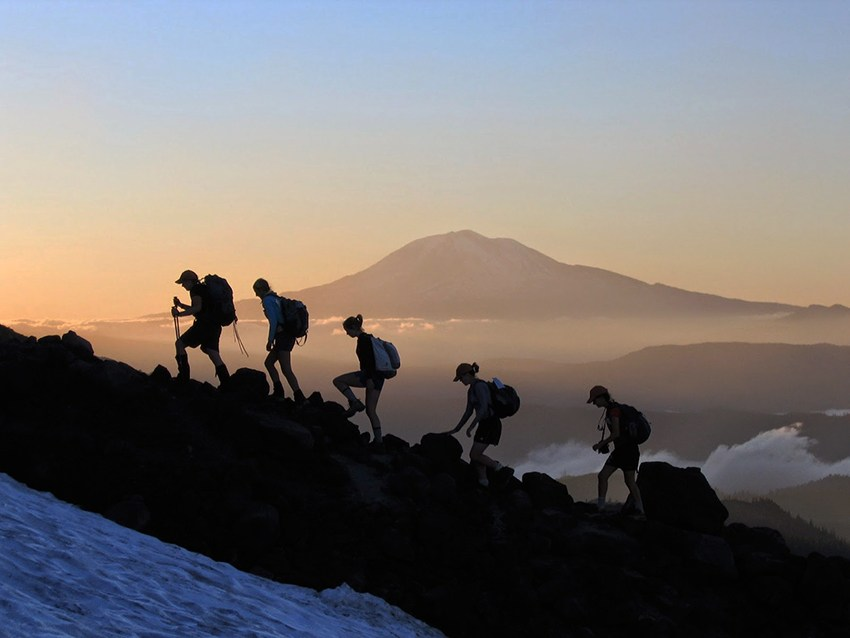
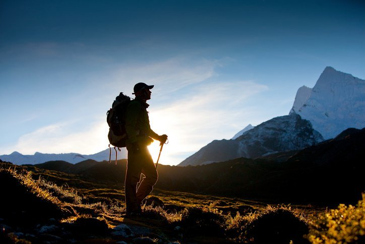

Newest
Perjalananku Naik Kereta
Inilah aktifitas terbaru ku setiap pagi di hari kerja.
Most Viewed
Filosofi Naik Gunung
Banyak pelajaran yang bisa di ambil dari sebuah pendakian, mereka para pendaki memiliki filosofi tersendiri untuk menggambarkan pelajaran yang bisa mereka ambil sebelum, saat, dan sesudah mendaki gunung.
Semua pelajaran itu memiliki porsi yang tak semua orang tahu bisa mengubah cara pandang tentang hidup seseorang.

Ini filosofi-filosofi pendaki gunung yang bisa mengubah cara pandangmu pada hidup menjadi lebih bermakna:
Mendaki Itu bukan tentang menaklukkan alam, tapi menaklukkan diri sendiri

Others Article
- Pendaki Gunung Memang Pantas Jadi Idola
- Destinasi yang Harus Dikunjungi Traveler Muslim Sekali Seumur Hidup
- Destinasi 'Surga' Alam Jawa Barat
- 9 Homestay di Bandung di Bawah 200K yang Manjakan Malammu
- Rekomendasi Tempat Wisata di Solo untuk Liburan Sehari Semalam
- Menjelajah Wisata Pulau Dolphin Jakarta yang Memanjakan Jiwa